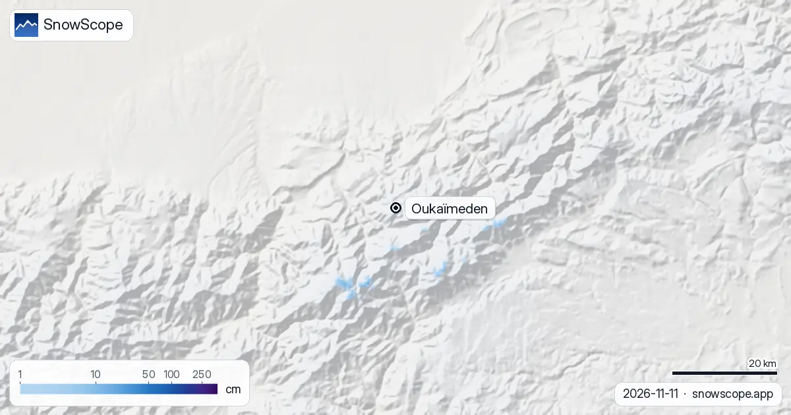

أوكايمدن: التلج فالأطلس (المغرب)، الحالة نهار 12 نونبر 2026
باقي ما طاحش التلج فالأطلس. فالحساب ديال الموديل ديال 11 نونبر، التلاتة ديال العلوات ديال أوكايمدن، 2600 متر و2929 متر و3258 متر، كلهم كيبينو 0 سنتيمتر، ما طاح والو فآخر 7 أيام والسيمانة الجاية ما جايبة والو. فشتوة عادية أول تلج كيكون هنا نهار 5 نونبر، يعني الأطلس الكبير معطل شوية.
شوف توقعات التلج مباشرة ديال Oukaïmeden فالتطبيق ديال SnowScopeالعلو ديال التلج، التنبيهات والخريطة 3D، فابور.
المنحدرات عريانة فالتلاتة ديال العلوات
الخريطة ديال التلج حدا أوكايمدن رمادية من واد أوريكا حتى للقمم: التحت ف 2600 متر، الوسط ف 2929 متر والفوق ف 3258 متر كلهم ف 0 سنتيمتر. آخر 7 أيام كانو ناشفين فكل علو والموديل ما كيشوفش تلج جديد ف 7 أيام الجاية.
هادا تقدير ديال الموديل للمنطقة، ماشي بلاغ ديال المحطة، ولكن الصفر فكل علو ما كيخليش بزاف ديال الشك: دابا توبقال والجبال اللي حداه عريانين.
شنو كيجيب نونبر عادي هنا
فالوسط ديال 46 شتوة اللي فاتو (1980-81 حتى ل 2025-26)، أول تلج فأوكايمدن كيطيح نهار 5 نونبر، فالتلاتة ديال العلوات. نونبر عادي كيكون رقيق على كل حال: القيمة ديال الوسط هي 2 سنتيمتر فالتحت، 3 سنتيمتر فالوسط و3 سنتيمتر فالفوق، ونونبر مثلج كيوصل ل 30 حتى 38 سنتيمتر.
فدجنبر كتبدا الشتوة ديال الأطلس بصح، ب 16 سنتيمتر فالتحت، 18 سنتيمتر فالوسط و20 سنتيمتر فالفوق فشتوة متوسطة.
شتوة معطلة كتوصل للقمة فمارس
الشهر اللي فيه التلج كثر فأوكايمدن هو مارس فكل علو: 46 سنتيمتر فالتحت، 53 سنتيمتر فالوسط و58 سنتيمتر فالفوق فشتوة عادية. الماكسيموم ديال شتوة متوسطة هو 78 سنتيمتر فالتحت، 92 سنتيمتر فالوسط و112 سنتيمتر فالفوق؛ الشتوة الأفقر وقفات ف 49 سنتيمتر فالفوق، والأغنى وصلات ل 248 سنتيمتر.
الشتوة اللي فاتت (2025-26) كانت كريمة: 181 سنتيمتر فالفوق و149 نهار ديال التلج. أحسن سيمانة باش تلقى 50 سنتيمتر ولا كثر فالفوق هي السيمانة 9، فآخر فبراير: 61% من الشتوات اللي فاتو كان عندهم هادشي.
شنو كيبدل هادشي للرحلة
البداية الناشفة عادية فالأطلس وما كتقول تقريبا والو على الشتوة الجاية. إلا بغيتي تتزلج فأوكايمدن، خطط لآخر يناير حتى مارس وشوف الخريطة ديالنا السيمانة اللي قبل: التلج هنا كيجي فشي حلقات كبار، وعاصفة وحدة تقدر تحول منحدر عريان لنهار ديال التزلج.

نصايح للي كيتزلجو
- خلي الصفحة ديال أوكايمدن قريبة منك: التلاتة ديال العلوات كيتجددو مع كل حساب ديال الموديل.
- الفتح ديال التيليسكي والمحطة كتقرر فيه المحطة، ماشي التلج اللي فالخريطة ديالنا.
- الطريق من مراكش لأوكايمدن تقدر تسد فعاصفة ديال التلج: تأكد قبل ما تخرج.
خرائط أخرى (مواقع خارجية)
المراجع والمصادر
- الأرصاد الجوية المغربية (DGM)، التوقعات الرسمية www.marocmeteo.ma/
على هاد الأرقام
الأرقام ديال التلج: الموديل ديال التلج ديال SnowScope، الحساب ديال 11 نونبر 2026، فتلاتة ديال العلوات فالمحطة (تقدير للمنطقة، ماشي بلاغ ديال المحطة)، والتاريخ ديال التلج ديالنا، 46 شتوة اللي فاتت (1980-81 حتى ل 2025-26)، موديل ديال اللي فات مصحح بالعلو. التوقعات كتبدل: شوف الخريطة قبل ما تمشي.
كيفاش تستاشهد بهاد المقال
للبحث، التعليم ولا الصحافة: الأرقام والرسومات تقدر تعاود تخدم بيهم بحرية تحت CC BY 4.0 مع هاد الاستشهاد.
SnowScope (2026), أوكايمدن: التلج فالأطلس (المغرب)، الحالة نهار 12 نونبر 2026, https://snowscope.app/blog/ar/2026/11/oukaimeden-neige-atlas-maroc-12-novembre-2026.html, تشاف ف 2026-11-12
SnowScope (Atlas Labs). (2026, November 12). أوكايمدن: التلج فالأطلس (المغرب)، الحالة نهار 12 نونبر 2026. SnowScope snow reports. https://snowscope.app/blog/ar/2026/11/oukaimeden-neige-atlas-maroc-12-novembre-2026.html
BibTeX
@misc{snowscope2026oukaimedenneigeatlasmaro,
author = {{SnowScope (Atlas Labs)}},
title = {أوكايمدن: التلج فالأطلس (المغرب)، الحالة نهار 12 نونبر 2026},
year = {2026},
month = nov,
howpublished = {\url{https://snowscope.app/blog/ar/2026/11/oukaimeden-neige-atlas-maroc-12-novembre-2026.html}},
note = {Published 2026-11-12 07:16 UTC; accessed 2026-11-12}
}· CC BY 4.0 · الطريقة، الداتا والأدوات →
Oukaïmeden: التلج والحرارة حسب العلو، هاد الشتا مقارنة مع اللي فاتت (الأدوات) →
تابع Oukaïmeden
فابور: ميساج ملي يجي التلج، والتوقعات كل صباح.
تقارير أخرى ديال التلج

Oukaimden (المغرب) فيها أكثر تلج فالأطلس (المغرب) اليوم، تقريبا 1 سم فالجهة الفوقانية. من بعدها Habri ب 0 سم، و Michlifen ب 0 سم. هاد الأرقام ديال …

المحطات ديال التزلج فالأطلس مافيهومش التلج اليوم. الموديل ديال التلج ديالنا كيلقى التلج غير فالقمم العالية: تقريبا 60 كم² ديال الأرض اللي فيها التلج، …

تقرير التلج فالأطلس (المغرب)، 12 نونبر. المحطات ديال التزلج فالأطلس اليوم: حتى تلج فالبيستات. التلج غير فالقمم اللي فالفوق: تقريبا 40 كم² ديال الأرض …